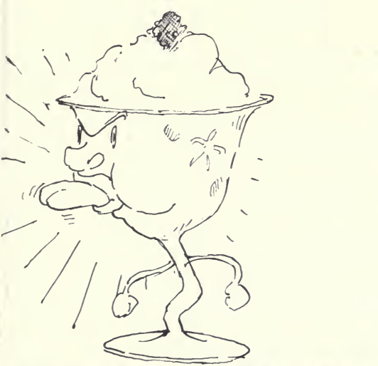

1 can red raspberries
juice of 6 lemons
1 qt cream
1 1/2 cans water
2 cups sugar

Press raspberries - add lemon juice, water, and sugar and put into a freezing tray until sherbet is frozen hard about 1/2 inch thick all around the sides. Then hollow out the entire(?) portion, replacing it with whipped cream. Put the sherbet that has been scooped out on top of the whipped cream.
Mrs. W. M. Marks Sn.